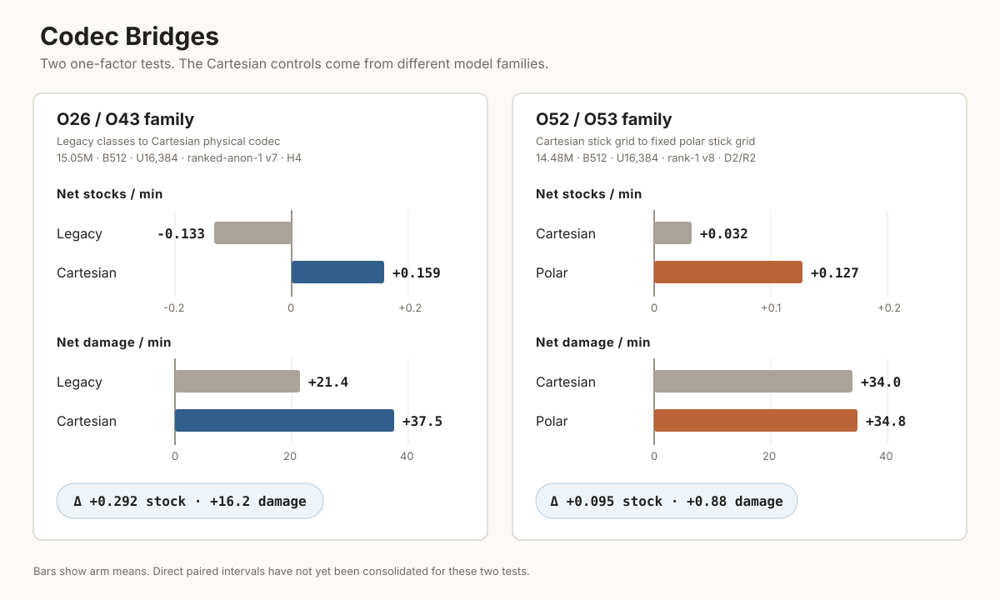
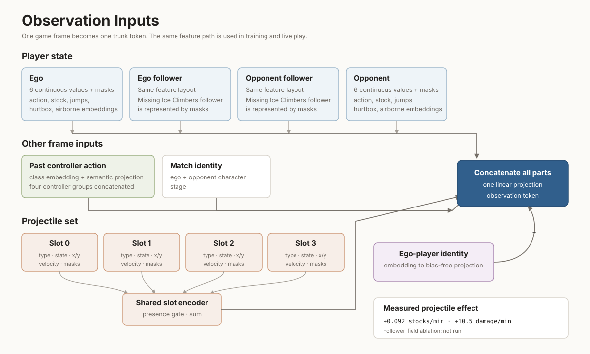
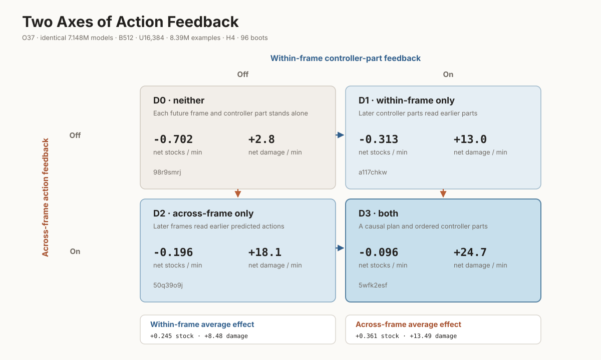

Same parameters, data, updates, initialization procedure, and deployment.
Each row locates the changed component, then compares the two mechanisms.
Capacity-sweep checkpoints at D = 2³⁰ supervised positions.
Fixed data, RTX 3060-feasible models only; selected by mean damage at each delay.
All healthy model-budget points evaluated at delay 4.
Rank correlation by delay
At delay 4, n = 33 and Spearman ρ = −0.67. Lower NLL broadly goes with better play. The within-model paths still reverse often.
L(N,D) = 1.6350 + 89.11/N.368 + 2009/D.498
Sort by the effect you care about; select a row to connect it to the final recipe.
| Experiment | Change | Stock Δ |
|---|
Final validation NLL fell from 1.579 to 1.379.
| Model | Data | Validation NLL | Stocks/min | Damage/min | Run |
|---|
Experiment 039 · capacity scaling



Comparison plots show treatment minus baseline, with a 95% interval. Recipe comparisons are labeled; scaling plots show absolute scores.
The 216M production run: validation loss at every 4,096 updates, and net stocks per minute at every checkpoint that was played.
Each new observation leads to a short plan of controller inputs. The next observation closes the loop.
Game → observation: the applied controller frame returns with the new game state.
The four O37 cells. Grey: what the decoder is handed when it writes aₜ₊₂. Right: each cell's change from the unconditioned cell, with a 95% interval. C = C-stick; M = main stick; T = triggers; B = buttons.
One decoder token per future frame; each frame’s four heads fire in order. O43 tested the three highlighted parts.
O18 packed the four controller groups into one symbol per frame and let BPE merge repeated holds into span tokens.
What goes into (sₜ, aₜ₋₁).
A short replay segment around a stock loss. These are illustrative, unnormalized weights with a substitute baseline. Training uses a learned value estimate and batch-normalized weights.
Events: damage dealt ↑, damage taken ↓; stock lost by opponent ▲, by ego ▼. Dashed line: substitute baseline. Tap or point to read a frame.
How the previous controller frame aₜ₋₁ enters the observation token.
Each replay is read from disk once, cut into a few windows, and those windows are spread across batches far apart.
Each row read baseline → the alternative, with a 95% interval.
Each row read baseline → treatment with a 95% interval. The first row is unpaired, so its interval combines the two arms' standard errors.
Which windows of four replays enter one batch, and what taking one window instead of four was worth.
Each O37 checkpoint evaluated at 1, 2, 4 and 6 frames per plan. Points are 1 frame → that setting with a 95% interval; execution length and replan interval move together.
Every arm saw the same 2.1 million examples; a smaller batch bought more optimizer updates. Each point is batch 2,048 → that batch, with a 95% interval.
Muon and AdamW rates move together: AdamW LR = 0.0425 × Muon LR. Each point is the smallest pair → that pair, with a 95% interval.
How each codec discretises the buttons, the triggers and the main stick.
Two matched comparisons, each read baseline → treatment: Δ = after − before, with a 95% interval.
The same trained model played with each identity, read masked identity → that identity.
Two tests at two scales. Each row changes the optimizer and its learning rates together; validation loss of both arms beside.
Ranked-anonymized replays only → the natural mix of all 44 sources, at equal updates.
How much of the training loss each predicted frame receives, and what moving half of it onto the next frame was worth.
How many places in a training window the decoder learns from, and whether letting it look back over the history helps.
What was tried, what happened, and what else changed in the test. Differences describe the tested systems; the table lists other changes that limit causal interpretation.
The ranked corpus (112,409 training replays): the decoded train split the loader reads, and the compressed artifact on disk.
The actions already queued are handed back to the decoder as its prefix; only the frames after them are written fresh.
Each model is played at the delay its inference forces. One panel per data budget; the same four models in each. Y: net stocks/min with 95% intervals. X: delay in frames, with model size underneath. The 125M model is highlighted because it leads at the largest budget.
A saturating curve fitted through the first three budgets of each model, and what the fourth budget actually scored. Y: net stocks/min; x: supervised positions. Hollow dots are D31 point predictions, with prediction uncertainty not shown. Filled dots and intervals are observed results. The curves are not used to select a winner beyond D31.
O39: 33 completed runs. The model-and-data fit uses all points; none were held out. N is compute-equivalent parameters: trunk + 36 × decoder, because each decoder weight runs 36 times per frame. C = 6ND.
| C | N | D | epochs | NLL |
|---|
Hover or tab to any point for its exact numbers; move along the compute-optimal panel for any budget. The O50 budget is C = 6·D·N with D = 2³³ supervised positions and N = trunk + 20 × decoder for that architecture.